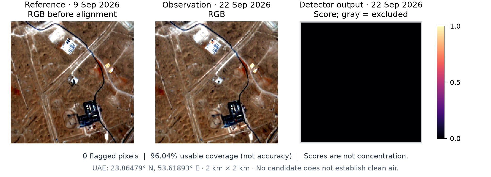

NO₂NITROGEN DIOXIDE · SENTINEL-5P
—
Loading…
SATELLITE EVIDENCE · TWO COMPLEMENTARY VIEWS
Explore nitrogen dioxide, carbon monoxide, sulfur dioxide and regional methane across Dubai. Inspect methane-like patterns in detailed satellite imagery. Keep the dates, evidence and uncertainty together.
Connecting to AI service…
Dubai comparison area selected.
Loading…
Select the tested methane area to inspect the saved result, or run this location in the notebook.
NO₂, CO and SO₂ are atmospheric columns; regional CH₄ is a column-averaged dry-air mixing ratio. Detailed methane screening flags patterns needing review. Neither gives a ground-level safety verdict.
Monthly means of available daily values in the named comparison areas.
| Comparison area | Mean quantity | Usable days |
|---|
µmol/m² = millionths of a mole above each square metre. A mole counts molecules. Missing days are gaps; negative retrievals are retained. The 5 km circles do not isolate one road or factory.

No candidate is not proof of zero methane. Usable coverage is not model accuracy. The reference RGB in this figure is shown before alignment.
HOW THE TWO IDEAS CONNECT
The Sentinel-5P selector shows NO₂, CO, SO₂ columns or regional CH₄ mixing ratio over larger areas. We added daily values, area comparisons and a history chart.
The methane workflow compares new and earlier Sentinel-2 images using the pretrained MARS-S2L methane detector. New places need new calculations.
Save measurements, flags and missing-data reasons. Forecasts need enough reviewed history and testing on unseen later dates.
The NO₂, CO, SO₂ and regional CH₄ workflows use Sentinel-5P Level 3 data with the catalog’s quality mask. Granules are averaged within each UTC day before area reduction. Monthly and period summaries weight usable days equally. This differs from the original direct image-collection mean. No conversion to ground-level concentration, AQI or source attribution is performed.
The grid spacing of approximately 1.1 km does not mean individual streets can be resolved. Methane screening uses native 20 m shortwave-infrared measurements on a 10 m processing grid, score > 0.5 and at least 100 connected pixels. Scores are not methane density, emission rates or calibrated probabilities. The public-image adapter’s UAE accuracy is not independently validated.
NO₂ saved study: January–August 2026. CO, SO₂ and regional CH₄: August–September 2026. SO₂ uses an assumed ground-level vertical profile; this does not make it a surface concentration. Regional CH₄ uses OFFL and albedo-bias correction; sparse coverage and residual retrieval artifacts remain. PM mass, VOCs and H₂S require unconnected instruments/data. Aerosol index is not PM mass.
CO catalog · SO₂ catalog · CH₄ catalog · NO₂ catalog · UNEP IMEO MARS-S2L · Attribution and terms